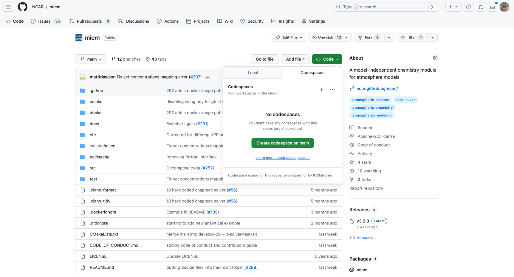

Installation and usage#
This tutorial is going to focus only and how to install micm and/or include it into your project in multiple different ways. Any API specific details will be elided and will be covered in another tutorial.
Github codespace#
If you want to play around with micm without figuring out how to include it in your local setup, this is the easiest option. Github codespaces offers a cloud-hosted version of Visual Studio Code configured to work with specific projects. We’ve set one up for micm. It’ll allow you to instantly run the tests and make changes. Please note that there is a cap on the number of hours your personal github account has each month. Follow these instructions to see your github codespace usage. At the time of this writing, there was a maximum of 120 core-houres allowed for github codespaces for free accounts.
To set this up, on the github page for micm, poke on the green code button and choose the codespaces tab and select “create codespace on main”. This will open up a new tab and start building a cloud environment running an instance of VSCode with the micm repository displayed and all of the tests prebuilt.
The first time that you open up a codespace, it will spend some time building the image and then compiling the test files. Onces that’s done, you can move into the build direcotry and run the tests.
cd build
make test
Installing#
From an archive#
All versions of micm are associated with a github release. Each release includes a tarall and zip that you can use to grab the code.
Find a release of micm that you want to build and download that archive. You can either do this with the browser by poking on the desired file or with the commands below.
If you intend to use cmake to install micm, you can choose the install location when you configure
cmake: cmake -D CMAKE_INSTALL_PREFIX=/Users/me/Documents ...
Zip#
wget https://github.com/NCAR/micm/archive/refs/tags/v3.2.0.zip
unzip v3.2.0.zip
cd micm-3.2.0
mkdir build && cd build
cmake ..
make -j 8
make test
sudo make install
Tarball#
wget https://github.com/NCAR/micm/archive/refs/tags/v3.2.0.tar.gz
tar -xf v3.2.0.tar.gz
cd micm-3.2.0
mkdir build && cd build
cmake ..
make -j 8
make test
sudo make install
Cloning from github#
git clone https://github.com/NCAR/micm.git
cd micm
mkdir build && cd build
cmake ..
make -j 8
make test
sudo make install
Usage after installation#
micm installs itself in a location typical on your system, like /usr/local. It does so under it’s own
directory with the version appended, e.g. /usr/local/micm-3.2.0. It installs header files and files suitable
for use with cmake’s find_package.
$ tree /usr/local/micm-3.2.0 -L 2
/usr/local/micm-3.2.0
├── cmake
│ ├── micmConfig.cmake
│ ├── micmConfigVersion.cmake
│ └── micm_Exports.cmake
└── include
└── micm
micm only installs its header and cmake files. If you intend to use any of the additional features of micm like JIT compiling or json parsing, you’ll need to have it’s dependencies installed.
Specify include path#
To compile micm code, it’s as simple as adding the include path to your compile command -I/usr/local/micm-3.2.0/include
or export CPPFLAGS="-I/usr/local/micm-3.2.0/include". If you changed the install location when configuring cmake, you’ll
need to set that path instead.
Cmake#
micm is developed with cmake support. This makes the inclusion of micm into projects that use cmake especially easy.
find_package#
This assumes you have micm installed using one of the methods above.
The cmake files installed with micm allow you to ask cmake to take care of finding and setting the include paths for you in a cmake project. Using micm with find_package is as simple as adding this line to your cmake project and linking your target to micm. You will need to change the version accordingly.
find_package(micm 3.2.0 REQUIRED)
add_executable(my_target my_target.cpp)
target_link_libraries(my_target
PUBLIC
musica::micm
)
Fetch content#
If you can use cmake 3.11+, the easiest way to include micm is with the FetchContent module. If you must use a lower version, you’ll either need to install the files on your system, or properly set the include flags of your cmake project to point to the micm header files if you don’t need GPU support. You may also want to look into ExternalProject.
To use micm with fetch content, you’ll need to include the module and point it to the micm repository and a commit or tag that you want to use. Then you make the content available and link your cmake target to micm.
include(FetchContent)
FetchContent_Declare(micm
GIT_REPOSITORY https://github.com/NCAR/micm.git
GIT_TAG 0996e5848b097e77ccbb2819f22c49844154f3e3
)
FetchContent_MakeAvailable(micm)
add_executable(my_target my_target.cpp)
target_link_libraries(my_target
PUBLIC
musica::micm
)
Debugging#
If you find yourself needing to debug the internals of micm, you don’t have to stick to print statements.
Luckily, cmake will generate projects for the major IDEs.
VS Code#
At this time, the easiest way to work in VS Code is to build micm yourself with cmake on the command line and use print statements. Feel free to submit a PR with instructions for setting up visual studio code for debugging micm.
Xcode#
On macOS, you’ll want to use xcode. You can ask cmake to generate an xcode project file for you.
mkdir xcode && cd xcode
cmake -G Xcode ..
After this completes, there will be a file called micm.xcodeproj that you can open with Xcode. Select a target you want to build and start debugging. Further use of xcode is beyond the scope of this documentation.
Visual Studio#
On windows, you’ll want to use Visual Studio. You can ask cmake to generate an xcode project file for you.
mkdir xcode && cd xcode
cmake -G "Visual Studio 17 2022" ..
After this completes, there will be a file called micm.sln that you can open with Visual Studio. Select a target you want to build and start debugging. Further use of Visual Studio is beyond the scope of this documentation.